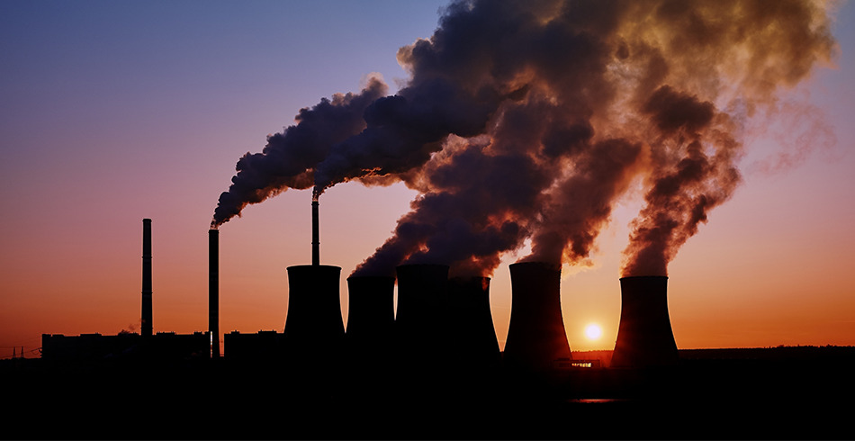

Map 1 · Proportional symbol map
Map 1 · Total CO₂ emissions
The circle area is proportional to a country’s annual emissions. Drag the slider to change the year; hover for moredetails.
Loading map and emissions data…
This explore which country emits the most today, how the visual changes when emissions per person, and why it matters.

The country totals indicate major CO₂ producers, while per-person figures highlight inequalities. Historical emissions reveal that current emitters are not necessarily the largest contributors over time.
Total emissions indicate the countries with the greatest impact, but these totals are significantly affected by population size and economic scale.
The circle area is proportional to a country’s annual emissions. Drag the slider to change the year; hover for moredetails.
The charts shows 13 countries with the largest absolute increases or decreases in annual CO₂ (2000–2024), plus Australia and Malaysia for added context. Grey = 2000; teal = 2024.
This shows how emissions accelerated after industrialisation.
A waffle chart: 100 squares = 100% of world CO₂ in the latest year, coloured by the seven largest emitters.
produced % of world CO₂ in , followed by (%). The seven largest emitters together account for %. Australia ranks # in the world for total emissions ( Mt) and Malaysia # ( Mt).
Dividing emissions by population changes the comparison. A country with a smaller total can still have a high average footprint per resident.
Choropleth: darker shades mean more tonnes of CO₂ per person. Grey = no data.
Violin shapes show how CO₂ per person varies across countries in each continent in 2024. Wider parts mean more countries sit near that value.
Most countries in every continent sit at low per-person emissions, but Asia has the widest spread, from under 2 t to a thin tail past 40 t (Gulf oil states such as Qatar). Africa is the most compact, with nearly all countries under about 4 t, while Europe clusters tightly around 4–6 t. Australians emit t of CO₂ per person, # of countries with over a million people, compared with t in Malaysia (#) and a world average of t. The highest is at t.
A percentage change view helps distinguish countries whose emissions are growing from those making redctions.
Diverging map: blue means emissions have fallen since 2000, red means they have risen. Countries with under 1 Mt in 2000 are left grey.
Small multiples, each with its own scale. Countries that emitted over 100 Mt in 2000.
Between 2000 and , emissions rose in countries and fell in . The biggest increase was in (+ Mt a year) and the biggest cut in the (− Mt). Australia’s emissions changed by %; Malaysia’s by %.
Cumulative emissions add up past annual emissions. This shifts the story from today’s largest emitters to the countries that have contributed most over time.
Each cell is a country’s average annual emissions in that decade. Hover for more values.
The thickness of each band is that region’s emissions. International aviation and shipping are not included.
Running totals reveal a different distribution of responsibility. Australia and Malaysia are drawn thicker.
China’s average annual emissions jumped from about 1,100 Mt in the 1970s to 11,700 Mt in 2020–24, overtaking the US (which peaked in the 2000s and has since fallen), while Germany, Russia and Japan have flattened or declined. Since records began, Australia has emitted about billion tonnes of CO₂ and Malaysia about billion tonnes.
Country totals tell us where emissions occur. A sector breakdown helps explain which activities cause them.
Treemap from EDGAR: rectangle area is a sector’s share of the country’s CO₂. Choose a country.
Sectors group EDGAR’s IPCC 2006 categories. Domestic aviation and shipping are included; international aviation and shipping are not allocated to countries.
Connected scatterplot: each country’s path through time compares CO₂ per person (horizontal) and total CO₂ (vertical, log scale). Select a year range.
Australia's emissions per person are among the world's highest but have fallen from about 19 t to 14.5 t. Malaysia's have almost tripled since 1990 to 8.2 t, so it is catching up from far below. In Australia the largest source is (% of CO₂); in Malaysia it is (%).
Total emissions, per-person emissions, changes over time and cumulative emissions answer different questions. Together they show why climate action needs both the largest emitters and the highest-emitting populations to chnge, while recognising historical differences and national circumstances.